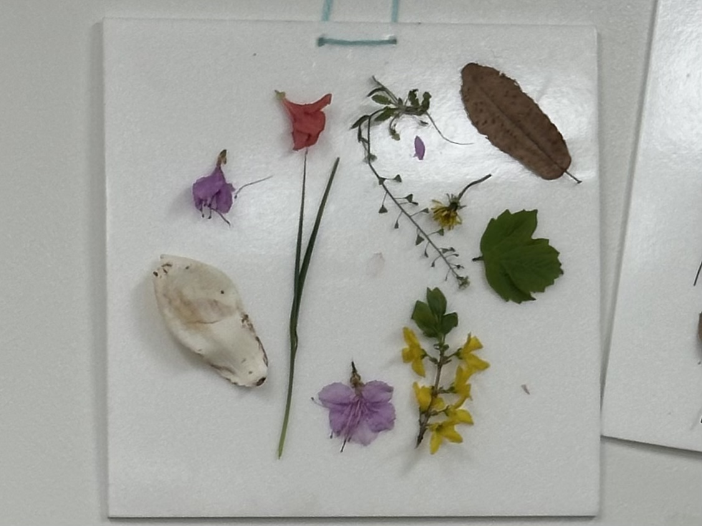
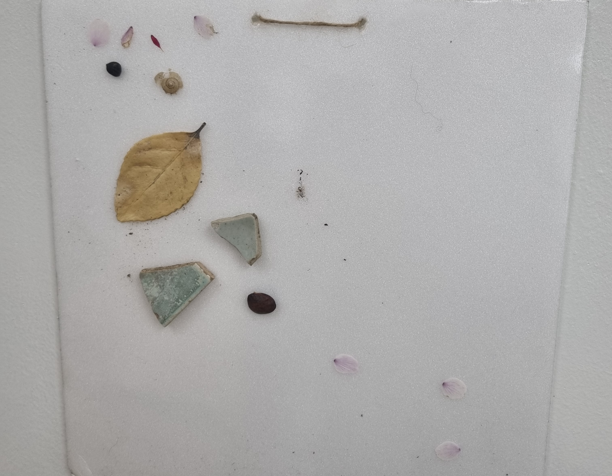
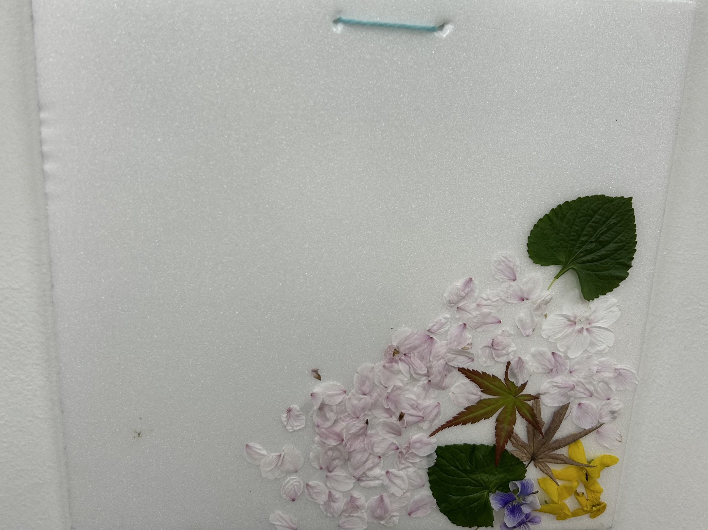
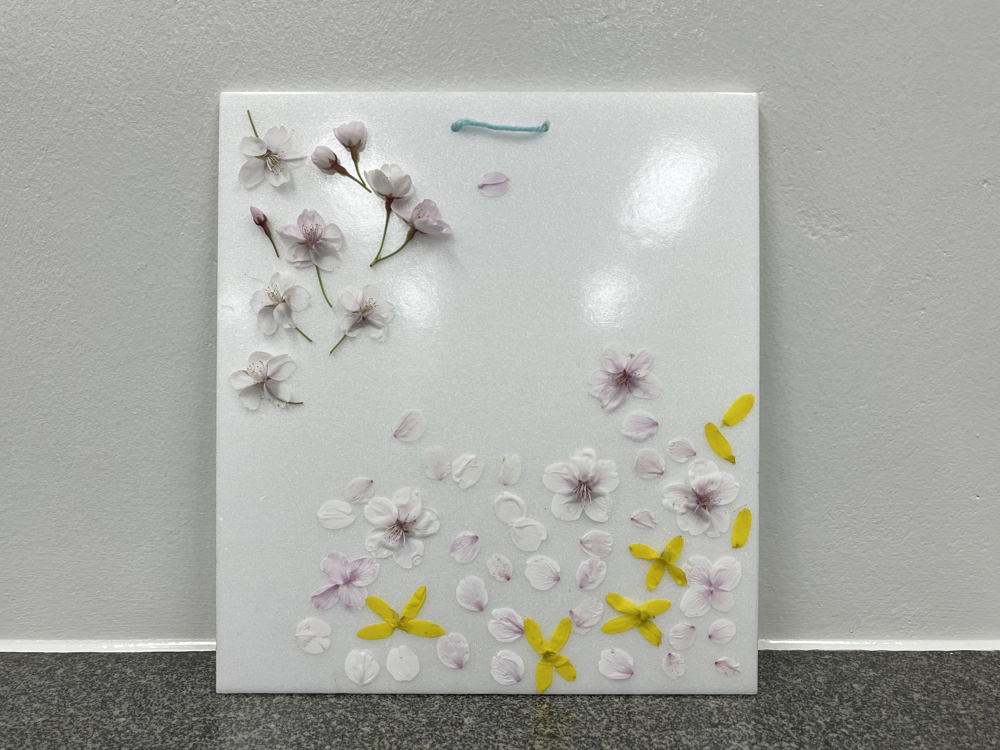
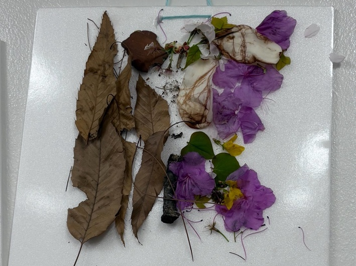

엇!! 바닥에서 초록색 물감을 발견했어요!
이걸로 무엇을 할 수 있을까요?
이걸로 친구의 선물을 만들 수 있을까요?
그렇다면 친구의 선물로 무엇을 만들면 좋을까요?
길을 따라가며 함께 아이디어를 모아봐요!
음… 과연 어떤 선물이 좋을까요?
엇!! 바닥에서 초록색 물감을 발견했어요!
이걸로 무엇을 할 수 있을까요?
이걸로 친구의 선물을 만들 수 있을까요?
그렇다면 친구의 선물로 무엇을 만들면 좋을까요?
길을 따라가며 함께 아이디어를 모아봐요!
음… 과연 어떤 선물이 좋을까요?

봄이 되면서 캠퍼스 내에 여러 식물과 꽃들이 자라고 떨어졌어요. 학교를 돌아다니면서 마음에 드는 자연물로 작품을 만들러 나왔어요. 처음에는 내가 좋아하는 벚꽃에 집중하며 걸었는데 학교에는 너무 다양한 꽃들과 잎이 많았어요! 잘 보이지 않았던 잔꽃이나 낙옆들도 발견하고 진한 노란 색의 개나리나 빨갛고 보라색인 철쭉도 발견했어요. 작품의 가운데에 있는 벚꽃잎은 친구들과 돌아다니며 우연히 손에 잡은 꽃잎이에요. 날아가는 벚꽃을 잡으면 소원이 이뤄진데요! 학교를 걸으면서 마음에 드는 꽃과 잎을 다 모았는데, 어떻게 붙일지 고민이 되었어요. 그러다가 동그라미 모양으로 붙이고 싶었고, 알록달록한 꽃과 잎을 붙였어요. 그런데 며칠이 지나니 꽃의 색이 갈색으로 변했어요. 자연의 아름다움과 변화를 볼 수 있어서 신기했어요.
신하선, 2026
꽃잎을 잡으면 소원이 이루어진대요~
어여쁜 꽃님이가 꽃가루를 흩날리며 길을 안내해주네요. 함께 따라가보아요.
아! 꽃과 같은자연물들로 만든 작품들을 보니 마음이 맑아지고, 마음껏 계절을 즐길 수 있는 것 같아요.

이 작품은 액자를 예쁘게 꾸미는 것보다, 마음에 드는 자연의 조각들을 모으는 과정에 더 집중해서 만들었어요. 처음에는 둥글고 오목한 팬지꽃 잎 안에 벚꽃잎이 쏙 들어가 있는 모습이 예뻐서 액자에 붙여보았어요. 그런데 가만히 생각해보니, 벚꽃잎이 수많은 곳 중에서 하필 그곳에 우연히 떨어졌기 때문에 더 아름다워 보인다는 걸 깨달았어요. 그래서 제 액자에도 그런 우연한 아름다움을 담아보고 싶어졌어요. 벚나무 아래에 서서 빈 액자를 들고, 벚꽃잎이 바람에 날려 액자 위로 떨어지기를 가만히 기다렸어요. 액자 오른쪽 아래에 있는 세 개의 벚꽃잎은 제가 붙인 게 아니라 하늘에서 우연히 톡 하고 떨어진 거예요. 그리고 길에서 주운 깨진 도자기 조각도 함께 붙여보았어요. 처음 발견했을 때 색깔이 참 예뻤거든요. 도자기는 사람이 만든 물건이지만, 사실 흙을 불에 구워서 만든 거라 자연과 아주 비슷하다고 생각했어요. 그래서 제가 직접 붙인 벚꽃잎과 하늘에서 우연히 떨어진 벚꽃잎들 사이에 이 도자기 조각을 붙여보았어요.
김지호, 2026
벚꽃은 언제 보아도 참 예뻐요
돌멩이 친구가 데굴데굴 굴러가요. 데굴데굴 같이 구르며 따라가봐요.
놀이터에 굴러다니는 돌, 푸릇푸릇한 나뭇잎, 맑은 냄새를 풍기는 흙 등 뭐든지 다 좋은것 같아요!

이 작품은 밖에 떨어져 있는 꽃잎, 잎을 모아서 배치한 것이에요. 평소에는 무심코 밟아 지나가는 낙엽과 꽃잎에 주목하여 자연의 아름다움을 담아봤어요. 특히 벚꽃은 예쁘게 피어 있는 기간이 짧은데, 이 때 많이 피어 있었어서 그 순간을 담아보자 떨어져 있었던 벚꽃을 많이 모았어요. 그리고 꽃잎이나 낙엽이 바닥에 떨어져 있는 모습을 표현하고 싶어서 오른쪽 밑에 모아서 배치해봤어요. 잎과 벚꽃을 섞어 배치한 것은 실제 자연 풍경에 가까운 분위기를 표현하고 싶었기 때문이에요. 밖에서 보는 벛꽃 아래에는 꽃잎뿐만 아니라 다양한 잎과 작은 가지도 함께 떨어지고 있어요. 그 모습을 떠올리면서 꽃잎과 잎을 함께 배치했어요.
사호, 2026
짧은 순간의 기록
노란 개나리 친구가 우리를 반겨주네요.
이번에는 어디로 갈까나?~

봄을 맞아 꽃이 활짝 핀 캠퍼스를 돌아다니면서 봄의 흔적을 최대한 모아보려고 했습니다.
바람에 흩날리다 떨어진 꽃과 꽃잎들을 주워서 액자 속에 담아보았고, 연분홍빛의 벚꽃과 쨍한 노란색의 개나리를 조화롭게 배치하여 생동감을 표현하고자 했습니다. 특히 꽃들의 배치에 신경을 많이 썼는데 조금은 흩날리는 모습을 표현하고 싶어서 중간을 비워둔 채 구성을 했습니다. 그래서 하단에는 꽃잎들이 소복이 쌓여있는 길의 모습을 표현하기 위해 밀도있게 구성해보았고, 상단은 꽃의 가지까지 함께 붙여서 꽃이 하늘에 날리고 있는 모습을 더 강조해보았습니다. 이 작품을 통해 봄이 품고 있는 색들의 조화로움, 그리고 그 안에서 제 눈으로 포착한 아름다움을 함께 담아내고 싶었습니다.
안정현, 2026
봄의 색들의 조화로 만들어진 아름다움
여러명의 벚꽃 친구들이 우릴 반겨줘요!
같이 따라가봐요!

이 작품은 자연에서 직접 찾은 낙엽과 꽃을 이용해 나비 모양으로 만든 활동이에요.
한쪽 날개에는 가을 느낌이 나는 마른 낙엽을 붙여 조용하고 차분한 분위기를 나타냈고, 다른 한쪽 날개에는 봄 느낌이 나는 보라색과 노란색 꽃을 붙여 밝고 따뜻한 분위기를 표현했어요. 서로 다른 계절의 자연물을 한 작품 안에 함께 넣어 계절이 바뀌고 자연이 계속 이어진다는 모습을 나타내고자 했어요. 또 나비 모양으로 만들어 자연 속 생명의 아름다움과 자유로운 느낌도 함께 표현했어요.
신채민, 2026
나비는 계절의 가운데에 있어요
나비가 따라오라고 손짓을 하네요!
우리 친구도 다가오는 여름을 제대로 즐기며 계절이 주는 감동을 느꼈으면 좋겠어요!